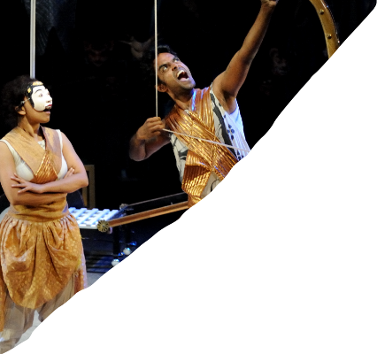

INTRODUCTION
なぜ今「マハーバーラタ」なのか？
「平和」について改めて考えるストーリー全世界を司るものが神だとすれば、なぜ神であるクリシュナは、策を巡らしてまで、登場人物すべてを滅亡へと導いたのか？
それは、「戦い」そのものを廃絶しようとしたからだと考えられる。戦うことそのものへの虚しさ、「戦い」そのものの「悪」を問う物語が「マハーバーラタ」と言える。
平和とは？私たちには何ができるのか？根源的な「平和」を希求する物語。現代社会を映し出す人間ドラマ対難民問題やヘイトスピーチ問題に見られるように、文化的背景が「異」なるものに対して非寛容になりつつある現代社会。
神の血を引きながらも、現代人同様に欲望や嫉妬によって争う登場人物たちが破滅していく様を描いた「マハーバーラタ」のストーリーは、人類が歩んできた争いの歴史の物語とも言い換えられる。非寛容による悲劇の物語である「マハーバーラタ」を現代社会に重ね合わせつつ描くことで「寛容」の重要性を示す。


京都佛立ミュージアム館長
京都・長松寺/横浜・妙深寺 住職
長松清潤
「文に非ず、其の義に非ず、唯だ一部の意のみ。」
まずこの聖句が浮かんだ。境界線に立つ人類。超越する意志。小池博史氏の心象が生み出したアバターが乱舞しながら深層意識に波紋を起こしてゆく。
仏教の奥義と小池作品が通底して見えるのは何故か。40年に及ぶ創作活動で到達した究極の舞台が普遍の題材により現出されようとしている。